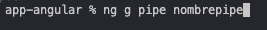

colocar el comando en la terminal o cmd ng g pipe nombreproyecto (el nombre que le desees colocar.)
@Pipe anotacion para que el frameword de angular puede reconocerlo como tal.
name nombre con el cual colocaremos y el no realizara algo.
transform en este metodo va a captura los ene parametro de acuerdo a lo que necesitemos y de acuerdo a lo que se realice en dicho metodo